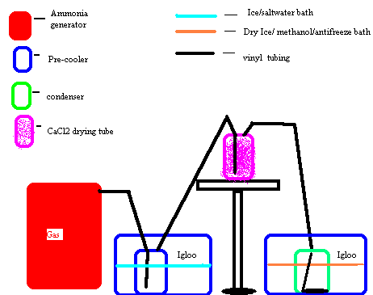
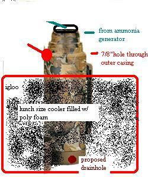

The Complete Birchby Mister_Clean (retired)This post is intended as a final answer to all those nagging birch questions that keep popping up. Before I begin, I would like to make one thing perfectly clear: THE BIRCH IS A DANGEROUS REACTION AND SHOULD NOT BE ATTEMPTED BY AMATEURS. I mean no disrespect to anyone by this statement, I just dont think it has been emphasized enough how dangerous this reaction can be. An OVERVIEW: Technically, the birch reaction refers to reduction by sodium dissolved in ammonia. Lithium/NH3 reduction is not actually a "birch" but for simplicities sake I will refer to it in this manner. When lithium is dissolved in ammonia it releases an electron, referred to as a "solvated electron" . The solvated electron produces a "royal blue" color in the ammonia, which, depending upon concentration, can appear almost black. Two electrons are required to reduce a molecule of ephedrine into methamphetamine. Therefore the proper molar ratio for reactants is 2Li to 1 pseudo. The amount of ammonia present is not important, as long as it is sufficient to dissolve all the Li present. This 2-1 ratio is EXTREMELY important. Too little Li and not all the pseudo will be reduced. Too much and your pseudo will be OVER reduced. This is the main reason contaminants (including water) must be avoided. They will use up some of the electrons, leaving you to "guess" how much Li you need. Your guess will most likely be wrong. The 2-1 ratio is based on FREEBASE stock. If you use pseudo HCL, then the amount of Li required will be higher. CLEANING PSEUDO PROPERLY: Placebo's lesser cure, followed by an a/b extraction, is sufficient. Those of you using equate suphedrine will have to change your source, as they have been reformulated with so much povidone they will literally turn to jello upon basifying. Obtaining Li: Eveready AA size batteries contain .94g of Li each. it is found in a flat metal strip inside the battery which is light grey. There is another strip inside these batteries which appears shiny. The shiny strip is trash. All other Li batteries should be avoided. The AA's are out there. Look for them. Obtaining anhydrous ammonia: The ammonia used must be "anhydrous". It is impossible to use any form of aqueous ammonia directly. Anhydrous ammonia is a gas at room temperature, and typically requires around 100psi to become liquid at room temp. It is also liquid at -33c at standard pressure. Ammonia is a weak base, it is typically found as a salt in OTC fertilizers. Adding a strong base, such as NaOH (sodium hyroxide or Red Devil) will replace the ammonia in the ammonia salt, freeing it to form a gas. This gas can then be condensed in another container which is chilled below -33c. Aqueous ammonia can be used only by turning it into a salt, then boiling off the excess water.A 1-1 molar ratio is required for this, and as a mole of HCL weighs about twice what a mole of NH3 does , about twice as much hcl by weight is required. THE REACTION: There are several different opinions as to how the reaction should be done. Some people add the Li to the NH3 first, in order to ensure blueness. Some add the pseudo and Li alternately, and some just chuck the whole mess in together. I dont really know WHAT the RIGHT way is, all I know is what seems right to me. Dissolve the pseudo in anhydrous isopropanol . I recommend about 6ml per gram. Place it in a container as close to the volume you have as possible. Try to avoid air space as it will encourage condensation. This amount of iso will not completely dissolve it, but will make kind of a slush. Place this in the freezer a few hours before your reaction is to start. If you already have anhydrous ammonia, then peel your batteries. This can be easily done by cutting just through the metal casing in a spiral pattern, grabbing the end of the metal with needlenose pliers, and unwrapping. This leaves you with a paper wrapped cylinder. You now need 2 containers filled with naptha. The first container should be wide and flat enough that you can get both hands in (your not actually going to PUT your hands in there, Tasty). the second is your Li storage container. For the second container it is helpful to have something to keep the Li below the surface (it floats). A smaller plastic lid will work, but be sure to test it in the naptha before using to make sure it won't melt. Take the paper cylinder and submerge it in the large container of naptha. Now take an exacto knife and CAREFULLY slit the paper open. Try not to go past the paper layer with the blade as it will short the Li strip. Once the paper is slit, peel it off. This will expose the inner strips and carbon. Now unroll the whole mess quickly under the naptha. Once this part is saturated with naptha it can no longer short out. Take the grey Li strip, being careful not to rip it, and put it into the second container. Leave the carbon crap in the first container till you are done. Prepare as many batteries as necessary at this time. IF YOU ARE CONDENSING YOUR AMMONIA, do not unwrap the paper until you have finished condensing, just strip the metal casing. Now for the fun part.... If you have a tank, place it in a container of ice. After the tank is chilled, add rock salt to the ice. This will drop it another few degrees. Place your reaction vessel in ice and add an equal volume of cacl2 to the ice (this can be purchased by the gallon as concrete accellerant). The ice will start to melt quite rapidly, but this will give you the low temp necessary to hold the ammonia. Fill the reaction vessel with 250 ml of ammonia, plus another 100 ml for each ounce of pseudo. Now add the pseudo to the ammonia. Leave it in the ice and stir vigorously. WARNING: THE ADDED HEAT FROM THE PSEUDO / IPA WILL CAUSE THE AMMONIA TO BOIL, ADD SLOWLY. Once the pseudo is in, and the temp has equalized (ammonia not boiling off) take your first Li strip, rip off about 1/5th of the strip and quickly pat it dry on a paper towel. Tear it into 2 or 3 pieces (small) and toss into the reaction vessel. Mix well. WARNING: ONCE THE LI IS EXPOSED TO AIR IT WILL BEGIN TO REACT. THE PIECES WILL HEAT UP SLOWLY AT FIRST, BUT AT AN EXPONENTIAL RATE. THEY CAN BECOME HOT ENOUGH TO IGNITE YOU, YOUR FURNITURE, OR ANY AVAILABLE WATER DROPLETS. When the pieces are almost completely dissolved (15-20 seconds) repeat the process. As you near the end of your Li, the pieces will take longer to dissolve, but keep adding at a steady rate of 1 piece every 30-45 seconds. When all the Li has been added, and the temp has equalized, remove the reaction vessel from the ice bath. Place a lid on it with a tube going to the bottom of a five gallon bucket with about 1 1/2-2 gallons of water inside. to this water add 1/5th gallon of muriatic acid. Do not submerge the hose until the vessel is OUT of the ice. If you do, the cooling from the ice may cause the acid water to suck back. This will initiate a rather unpleasant sequence of events. Keep mixing the container for the next 15-20 minutes. Then you may place a heater in front of it to drive off the ammonia. Do not heat TOO rapidly, for reasons which should be obvious. If and when your water bucket starts to smell of ammonia, add hcl till the smell goes away, then add more. You cant have TOO much HCL. When most of the ammonia is gone (30-45 minutes) then carefully remove the top of the rxn vessel. Dont be a dumbass at this point and "sniff" the container. If there is still excess ammonia, it will be no secret. Pour in 100ml water per ounce of product, then your favorite NP. Toluene is fine here. Ether is not recommended. Now add NaOH in 1/4 teaspoon increments, mixing well each addition, until no more bubbles evolve. the bubbles are from NH3 evolving from the water layer. Separate the NP and rinse with 2 small volumes of NaOH solution (PH 13), then with a small volume of distilled water. Dry the NP with baked epsoms, let the epsoms settle, then decant into a clean container. filter the bottom portion of the NP to catch any stray salt. Gas, filter, recrystalize, and enjoy. CONDENSING AMMONIA FROM FERTILIZER (OR ANY AMMONIA SALT):  A plastic gas can is used here as the generator. This is used because the soft sides allow you an idea of the system pressure. There are many other containers which may be used, but I cant think of any which are as forgiving. While generating, the system pressure will fluctuate. If your system cannot take 20 PSI, then you should redesign it. During normal operation it should run 5-7 psi. The principle of this operation is that " the stronger base liberates the weaker base from it's salt." If your salt is ammonium chloride, then you would add sodium hydroxide to it to liberate the ammonia. the reaction goes: NH4CL+NaOH = heat + NaCl + H20 +NH3. The reaction requires a small amount of water to initiate, but once it starts it produces it's own water (as well as salt). Notice that the reaction produces heat (exothermic) as this is gonna be important later. To produce a liter of ammonia you will need about 2 kilos of ammonia salt, as well as 2 kilos of NaOH. This is a theoretical minimum. When buying fertilizer, look for "ammoniacal nitrogen". Forget "total nitrogen" or "urea". If your fert is 20% ammoniacal nitrogen, then you will need 10 kilos minimum to produce a liter. If you shoot for a liter, you will likely make 1/2 that much. The amount of water required to initiate the reaction is quite small. If you live in a humid climate, you wont have to add any. As water is produced, it absorbs NH3. wherever you have water in the system you will have lots of nh3. This includes in your drying tube. That is why your salt and NaOH should be added dry. Now, your ammonia generator is for the most part a closed system. The NH3 is going to expand from the generator, and shrink as it cools on the way to the condenser. So your generator is humming along, producing heat, gas, and water, until it reaches a point at which there is so much water being created that it stops pushing ammonia. The water then begins to cool, and as it cools, becomes capable of holding even MORE ammonia. Suddenly, your reaction that was pushing ammonia is now PULLING ammonia. This is "suckback". When your system starts to suck, you should, quick as a bunny, open your generator. If you do not, then the ammonia from the condenser will be sucked back into your drying tube, and you will wish to god you had just scraped the damn matchbooks. This is a good time to recharge the generator. WARNING ABOUT AMMONIA: Ammonia will seek out and bond with any nearby water. This means your eyes and airway. You should always have a few gallons of water handy to dowse yourself with, as it may save your life. One breath of concentrated ammonia vapor is enough to burn your trachea and make it impossible to breathe. High concentrations of ammonia (above 15%) are explosive. Keep this in mind when its time for your mid reaction toke. Gas law says that 1 mole of any gas will occupy 22.4 liters of volume at standard temp and pressure. A mole of ammonia is 17 grams. In short, it takes very little ammonia to fill up a room. Anhydrous ammonia is liquid at standard pressure only below -33c (-28f). This temperature is quite sufficient to freeze various body parts. Do not drop money into your ammonia. It will shrink (thank you slydog for this contribution). Be sure your connections are airtight BEFORE making/using ammonia. A seemingly minor leak smaller than a pinhole will evacuate a room. If there is a problem with ammonia, dump water on it and GET AWAY. Hold your breath till you are sure your clear. DISSECTING THE AMMONIA GENERATOR GENERATOR: (the "gas can"). This is where the ammonia is liberated from the salt. It is important to realize that this part of the unit requires CONSTANT attention. The preffered method is to start off with 20 ml or so of water (you may also use aqua ammonia for a little extra kick). pour a layer of DRY ammonia salt on top, then add the NaOH and quickly seal the unit.the salt and lye are added dry so that they do not react too rapidly. once the unit is sealed, begin shaking to mix the fert/lye. within a minute you will see the generator beginning to pressure up. Shake intermittently to maintain a constant, moderate pressure. The best way to determine the right pressure is to pay attention to the condensor pressure relief valve. When ammonia fumes begin to emit strongly, back off the pressure till there is only a very faint amonia odor from the relief. Be sure to layer your fert/lye in the proper ratio, with a slight excess of NaOH. So for a 20% fertilizer, you would add about 1/4 lb of NaOH for each LB of fert. Small layers work best. You will be recharging every 15-30 minutes on average. This process takes time. Expect to wait an hour for your first ML of ammonia. Mr Cleans first attempt required about 8 hours to generate 500 ml. It also took almost 30lbs of fert and 7 lbs of NaOH, as well as 25lbs of dry ice. It gets easier, though. The generator will get hot. expect temps around 140-150f. The generator must be watched constantly. It can go from positive to negative pressure in less than 1 minute. If you have to take a leak, don't dally. After you have been running it for a while, condensation will form in the hose coming from the generator. (it should form a U shape before going to the precooler) You can watch the water droplets to get an idea of the flow rate. PRECOOLER: when your ammonia exits the generator, it will be around 140f. to condense ammonia, you will need to cool this below -28f, in other words, its gotta drop almost 170 degrees. You will be there an extra day or two if you expect your condenser to do ALL the work. When the hot ammonia is generated, it carries a substantial amount of moisture as well. The precooler will capture a good portion of this, ensuing that your drying tube does not get overloaded. The precooler cools in two ways. Firstly by heat transfer to the ice bath, and secondly by expansion of the gas. As water condenses here, it will trap ammonia with it. Due to the low water temp, this will be about 70-80% AQUA AMMONIA (NH4OH). Towards the end of ammonia generation you may either: 1. remove the precooler from the ice bath, liberating ammonia as it warms up or 2. neutralize with HCL, making nh4cl. Whatever you do, be sure that the tube end from the generator never becomes submerged. It will suck the water into the generator and kill the reaction. Drying tube: This is elevated above the other components, mainly to condense and drain back water before it reaches this point. There are also other reasons for the elevation that I would prefer not to discuss right now (bad memories).The drying tube should be thought of not as a primary way of drying your gas, but as a last stand barrier in case some slips through. Do NOT attempt to cool your drying tube. It will cause excess nh3 to be collected there, and will seriously fuck up your cacl2. CONDENSER: this is submerged in a dry ice/solvent bath. An inner tube which reaches the bottom will substantially improve nh3 condensation. Putting your PFED/ISO solution here first, and causing the nh3 to bubble through it, will greatly speed condensation, as the alc will act as a heat sink. The condenser should have a large surface area, and rapid thermal transfer characteristics. do not skimp here. Stainless steel and borosilicate glass work best. Avoid thick glass or plastic. A while back, some bees were recommending using antifreeze as a dry ice solvent. This WILL NOT WORK WELL. antifreeze does not transfer heat worth a damn. I did find, however, that adding a few ounces to the bath will increase the lifespan of your ice considerably. How do you keep the condenser from bobbing in the ice bath? Try adding a small amount of water to the bath. It will freeze at the bottom, sticking the container there. When the ammonia is condensing, there will be lots of vapor, and determining the ammonia level can be quite difficult. Give some thought as to how you will do this. TUBING: I prefer 1/4" vinyl tubing. It seems to work best. FAQ: This is a list of questions from the board. Some were included here to elaborate on various parts of the reaction, while others were included just because they were so damn stupid/funny I couldn't resist. Also included are a couple of answers by me which are incorrect. The correct answers follow the "OOPS". What are the correct ratios of reactants for a birch? And how much Li is in those batteries? Energizer AA Li batteries contain exactly .94g of Li per serving. (this info from an engineer for eveready) PS: ephedrine/psuedoephedrine freebase = 165.24 g/mole Li=6.94 g/mole 10 g Li soluble in 100g NH3 nh3~5lb/gallon .68g /ml (according to msn encarta) therefore: For a 28.8 g birch using PURE psuedo freebase you would need: 2.41 g li or approx 2.57 aa strips 39 ml anhydrous nh3 a really good fume hood. The 2450's are .47G of Li. theyre good for about 5.5g each. The nh3 amount is an EXTREME minimum. You will always lose a little when you add your Li and your psuedo/IPA. Personally I have never imagined trying less than 300 ml for 28.8g. extra nh3 never hurt anyones birch.But from what I have read the THEORETICAL minimum is MUCH less. PS: due to losses in liberating the Li strips, if one did not have a reallly good scale, I would recommend using ~ 2 3/4 strips. I imagined this worked PERFECTLY where refrigerant grade ammonia was used, with 28.8g of psuedo freebase yielding 26.9g of glasslike needles. Unfortunately, My last dream about ammonia from fert was done before I had the correct weight. I Do know that 3 1/4 strips proved to be slightly excessive. Is there any way to test the purity of the recovered NH3? In other words, is there a way to test liquid NH3 to determine if there is a small H2O contamination? As the condenser is chilled in the neighborhood of -70c there is an easy indicator of h20. Its called ICE. There has been no ice. OOPS: turns out, the freezing point of NH4OH (aqua-ammonia) is 1 degree higher than the freezing point of anhydrous ammonia. A better answer would be that, if your drying tube is set up like I diagrammed it, then there is no way a significant quantity of water will come through. Umm.... can silica gel be used as the drying agent? Probably not I'm guessing, but no one around here seems to have ever heard of Damp Rid or Dry Rite. It's a very warm, dry state. I live in the desert, and I can find it. Look at a contractor suppy house for concrete accelerrant. Do not use epsom salt in your DRYING TUBE. the magnesium will hurt your reaction. I use a paper towel at the tube opening and in the top of the jar to prevent tube gumming and keep the drying agent from getting into the tubing. NaOH may also be used. It is not as efficient volumetrically as CaCl2, but you WILL know when its used up. Hows the bio assay of birch product compared to rp/i? If you have done both correctly, then the bioassay should be exactly the same. The meth is the same molecule, so the only possible difference would be impurities. I believe it more likely that you would have unreacted pphed in a birch. If the battery shorts it's gone for good... right? Depends on what you mean by "shorted". If the Li becomes oxidized, then that oxidized portion is worthless. If the surface of the Li is covered with oxidation, that can be removed. If it is light oxidation, it will come off when you blot it on the towel before tossing it into the reaction. Here's a question for the chemically inclined out there. It seems to me that adding a few chunks of dry ice to the INSIDE of a homemade ammonia condensor would greatly increase the rate of ammonia condensation. This will create byproducts. It is not necessary if your condenser has enough surface area. Swim opened a "AA"energizer lithium battery, and when swim pulled out the rolled up contence swim found a little piece of metal that was folded over the roll, swim unrolled it and found what you said would be there, a long shiney strip and another strip that was a little (dull) and not as shiney as the other strip, and then the (dull) not so shiney strip started turning dark in colour, so why did it do that, and is it still alright to use. Swim also said that there was fumes and a awfull fucking smell when he opened it. When you open a battery in the air, two things will happen. First, the Li will start reacting with the air, and second the battery will start reacting with the other components of the battery. the "rotten egg" smell is from the electrolyte. "If there is a problem with ammonia, dump water on it and GET AWAY. Hold your breath till you are sure your clear." Wouldnt an acid be better? That is a reasonable assumption. HCL would neutralize it well, however in the reason I suggest water is: 1. I already said to have a bucket of water standing by. 2. If you have a problem, you wont have time to be careful, and dumping 3 gallons of acid may cause other problems. 3. If the ammonia douses you, which would you rather pour on yourself? Otherwise, good idea. The addition of the IPA+pfed generates gas. How much? Lets say theres 350 ml anhydous sitting there? How much will boil off in terms of ml's and fume wise? The amount of gas that will boil of is variable. If your ammonia is stabilized in a cold bath, and the pfed / iso is added carefully, you wont lose more than a couple ml. The amount of nh3 you lose is going to depend upon your technique, your equipment, and ambient conditions. I dont measure the quantity of ammonia as I am performing the reaction. so the best answer I can give is "not much". If you're somewhat effiecent with the process of peeling the caseing of the LI batteries, there isnt a need to open them under your solvent of choice. Actually, it is fairly important to saturate the battery innards. When you cut the plastic open, you will find that the interior components are all quite soft. it is nearly impossible to open the wrapper without penetrating the lower layers. If the thing is saturated in NP solvent, then it wont short. If it is not, it almost certainly will. You may not lose all the Li by opening in this manner, but you WILL lose some. By opening in the manner I have described, your Li will be almost completely unoxidized. Do you have to ice down the ammonia tank before discharging? Icing the tank is necessary here, if yours is already at 0c, I wouldnt think it necessary. The reason I recommend icing the tank is simple. It drops the pressure from 100psi to (what was that damn gas law again?) about 30psi. the valves on nh3 tanks are designed for on-off operation, and they arent very good at regulating the flow, so you want to have every advantage possible when decanting. Do I NEED dry ice? I recommend a dry ice bath if you are GENERATING ammonia, but if you have a tank, just use equal (weight) amounts of ice and CaCl2. Equal amounts of ice and H2SO4 will work as well, but can be rather hazardous. My $8 battey is an energizer for cameras in a blue package with a black top. Is this the "AA" you are refering to? (I've only seen these and the 2450's) Wrong battery. You want the $2 aa batt. It looks like a regular aa battery, (different color) no black top. Sighted recently at home depot and wally world. They are made by energizer and come in two varieties. a red topped battery and a silver battery. Just like what you would put in your walkman. We all know that the pills have been messed with big time lately, and that one of the advantages of the birch is that it works with ground up messed up pills. I've been reading about lithium carryover into product, and it driving the consumers to the end of their ropes. I have a question. When dealing with a messed up pill, how after the birch, is purification carried out? Are the ingredients just as troublesome? A water wash would remove the lithium salts, but if the pills retain their troublesome reaction to water, the problem is only delayed. Could someone comment? You could just grind up the pills and toss them in, and you WOULD end up with meth. However you would have to know EXACTLY what else in the pills is going to be reduced, how much Li that will require, and what the byproducts will be. Lithium carryover is bullshit. Lithium will not carry over into your NP unless you REALLY screwed up, and a water wash would remove it quite easily. I think it more likely that ammonia is carried over. As for purification, the methods used for RP/I work nicely. I have come to utilize these measures during said reaction. First, addition of minimal amount of mineral spirits to dissolve freebase and filter through a thick medium paper filter (if one is using coffee filters use the cone type; do not use basket type) add 50% more ms solvent to filtered ms then add minimal amt. of MEK or DMK (preferably MEK as it is less hygroscopic), one could also add some ether as a third solvent. Multiple solvent is then gassed to obtain go-go hcl. Go-go obtained has consistency like styrofoam is really light and clean; in my neck of the woods has become to be known as "Divinity". Well, in my neck of the woods we call it ammonium chloride. Divinity does have a nice ring to it, though. You have certainly elevated screwing up to an art form. Using three different solvents will make sure you get the most impurities possible. What, lithium? That shits supposed to make you happy, not sick. But, if you feel that its tainting your product and making people sick, why not switch to another viable metal, such as sodium. Actually, sodium is a BETTER metal to use, due to it's lower electronegativity, it is less likely to overreduce product. As far as making you happy, I assure you that LiOH will NOT make you happy when you snort it. The main reason sodium is not used is because it is difficult to obtain. It is used for a variety of O-chem processes and is only a little less watched than RP. It can be made by electrolysis of NaOH, but the process is a little too scary for me to attempt. The EDA thingy is still a viable route for honey production right? I am about to dream a dream with EDA so I hope so. So far I have seen no credible reference to a succesful separation of the product from the EDA. I don't know the secret, but I am pretty sure it will involve low temps, long reaction times, inert atmosphere, and a complex separation. I understand where you are comming from arent you expecting a little much from us hive members? Do we really need to how and why the reaction works? It just does, doesnt it? That how and why could only be answered AFTER a few years in school. If you screw up this one, assuming you live through it, the most likely result will be ten years of uninterrupted study time at the nearest federal education facility. The reaction is basic and can be learned and fully understood by anyone with at most 2 months of study. Knowledge is a part of who you are, and it is one of the few things that cannot be taken from you. I have an 8th grade education, yet I learned everything I know about the birch reduction in three weeks. I never even had to go to the library. Too bad there isn't some kind of semi-permeable membrane which allows the ammonia to pass through, but not the water vapor. Or is there? Unfortunately, ammonia forms a compound with water, rather than a mixture. So it is not possible to separate from water by mechanical means. Why can't I just use aqua ammonia? Li will reduce pseudo in the presence of H20. (Answer provided by Osmium) Li + H2O -------> LiOH + 0.5 H2 Li [6g/mol] H2O [18g/mol] For every gram of H2O present you need at least 0.33g Li. So what if I used 1l of 30% NH3? Cool, only about 250g of Li needed to dry it! And don't forget the liquid N2 to cool this bomb... Do u use liquid ferterlizer or soild? I recommend adding the NAOH DRY,DRY,DRY,DRY.(emphasis intended) adding in liquid form, or to a liquid is not a good idea because: 1. water quenches this reaction by absorbing mucho ammonia 2. a large amount of liquid will cause the ammonia you DO produce to be released very fast, like before you can get the lid back on. I made the mistake of adding naoh to nh4cl in liquid form (from 1/4 gallon of aqua ammonia) my friend who lived 3 BLOCKS AWAY mentioned an ammonia stink at HIS house. wanna guess how fun that was? Or you could just try it... lol. But seriously, the little h20 I do add to kick the reaction off is under a layer of fertilizer. the DRY NAOH is poured on top, and gentle shaking starts the reaction AFTER the lid is on. Hey what brand is used for a solid ferterlizer??? Fertilizer availability varies depending upon your climate. Where I live fertilizer blended specifically for cactus, citrus trees, and date palms is prevalent in stores. So it would be useless for me to specify a brand or type because it will likely not even exist in your area. Look for the highest ammount of "ammoniacal nitrogen". alternately, it is not difficult to source or synthesize straight ammonium chloride, which makes for a MUCH more efficient reaction. Can't I just use a canning jar for my generator? Do not try to use a glass ammonia generator, you will have nothing in the system to absorb excess pressure, and can easily have a blowout, or lose your ammonia through suck back. canning jars are designed to withstand great NEGATIVE pressure, not positive. Besides, if you are using fertilizer with 20% ammoniacal content, you will need around 20 Lbs of the stuff, and its hard to find a canning jar that size. Why do you use the 2-1 ammonia salt to fertilizer ratio? The correct ratio for naoh-nh3 from salt is about 1-1.8. I use a little higher ratio to account for impurities in the fertilizer. It seems to work better for me. Can't you just pipe the gas from the generator straight into your garden after running through a dryer? Actually, I was forced to do this once due to a system failure which resulted in insufficient ammonia. It worked quite well as 50g of product was produced from less than 200ml of ammonia, but I am not sure if the ammonia piping in made a difference. The 200ml may have been entirely sufficient by itself. I would use a large erlenmeyer flask for the condenser, or a large round bottom flask. Also I would curl the input hose of the condenser around the bottom of the flask so that the NH3 gas HAS TO stay in the flask longer and with hopefully condense quicker. Actually, I believe I mentioned that. Vessel 4 has a LOOP around the bottom. The large ehrlenmeyer is a good idea though. Perhaps If they have one at home depot I will get one. What kind of fittings do you use? I use fittings which are L shaped with threading on 1 end. I use NO epoxy or glue. The fittings are right next to the vinyl tubing at some major hardware store. I drill a hole, tap it(not necessary, but I gotta use this damn tap and die set sometime), and screw the fitting in with LOTS of teflon tape. The tubing goes on the outside of 1 end on the L and inside the other. The press fit seal is excellent by itself, and yes, it's not technically " quick release", but it is quick. Could you take the hose that leaves the damp-rid jar and put a couple of rolls in the hose and then place in a cooler of dry ice and anti-freeze.the same hose then goes to a 2nd cooler of dry ice and is hooked into the jar that is to catch your gas that becomes nh3. Is this possible are is there anybody that can tell me why this won't work? It will work, however you run three risks here. 1. Your tubing will become brittle from the extreme cold, and may break. 2. Your tubing may be attacked by the chemical you choose for your bath (depends on type of tubing and type of bath. You will have to check.) 3. You may go broke from all the dry ice you must purchase. My pre cooler will remove a similar amount of heat,(perhaps more), more safely, and with only about 1.25 worth of chemicals. (more cheaply if you make your own ice... see the faq on crytalline h2o production if you are unsure how to do this). But you ARE thinking along the right lines... how about this: 1. Reduce the diameter of your tubing. less volume = less heat 2. Increase the length of your tubing. or 3. Coil this excess tubing of yours in an icewater/salt bath. you will obtain more benefits from pre-cooling if your efforts are concentrated BEFORE the dryer IMHO. There's a whole lot of cheap gizmos used for drip irrigation that might be REAL cool for this application: including anti siphon valves that would dis allow "suck back"? I like vinyl tubing. I have not had problems with clogging, I am just paranoid about clogs in the drying tube. Perhaps this paranoia is WHY I haven't had any probs. As for the tubing size, I do not speak from experience on that, only common sense. A smaller diameter tubing has a thinner wall thickness (less insulation) and gives the hot gas more surface area to dispel heat through. I guess you have to actually try this reaction to appreciate the amount of heat produced, and heat is not our friend here. OOPS: The 1/4 inch tubing is best all around. Smaller diameters push more water droplets further through the system. 1/4" is OPTIMAL. How do you tell how much NH3 is in there? Does it matter how much Li is needed if theres "too much" NH3 compared to E? I take a flashlight, pop the top, and look. This is probly the hardest part, guessing the amount collected. picking up the container and swirling it will also give you a pretty good idea. but, as I've posted, the amount of ammonia required is actually quite small, and an excess wont really hurt. the ammonia's just a solvent for the Li, and doesnt take part in the reaction. How long are your tubing? Long as possible. There is a total of 22 feet in my setup. Whats the best containers for the pre-chill (a gallon plastic milk jug?), the drying tube and gas generator? For the pre chill, any will do, I used a SS kitchen canister for my last dream, a quart canning jar would work fine. I'd stay away from a milk jug unless you know how to make a strong tight seal there. My drying tube is a quart mason jar filled 3/4 of the way with cacl2. When you poked holes in your thermos, did the glass shatter inside? Could i use something else since the thermos obviously isnt one anymore now that the vacuum is gone? A thermos w/ a glass liner will not work. mine has a SS liner. stanley and alladin make them in large sizes. you can use an alternate condenser made of glass or stainless steel (stainless prefferred) . Bear in mind the effectivness is governed by the surface area for condensation, and the heat transfer characteristics of the material used. thats why SS works so well here. NOTE: After working with the thermos for a while, I switched to a large (3.5L) SS cylinder with about 6 1/2" diameter. That was the final generation of the condenser for me. How long does 5 lbs dry ice last? Not long enough. Could you tell me more of what you mean by "heat transfer"? Heat transfer is very simple. Some materials transfer heat faster than others. That's it. Aluminum, copper, and stainless have the best heat transfer capability. Borosilicate glass is usually made pretty thin, so its not bad either. Plastics seem to be the worst. If you have any questions, put the container on a warm burner, put your hand inside, and time how long it takes to burn you. Can I use CaOH instead of or in addition to NaOH? (question repeated 23 times in various forms) DAMNIT, FORGET THE FUCKING CaOH. USE SODIUM FUCKING HYDROXIDE. THIS BULLSHIT KEEPS COMING UP AND I AM FUCKING TIRED OF IT. FUCK CaOH. JUST FUCKING FORGET ABOUT IT. If you want to use some weak ass shit use fucking baking soda and cook the shit out of it. Fuck. Ok, lets try this one: how much dry ice and sludge can YOUR little cooler hold? I dont know, I've only put methanol, acetone and polyethylene glycol in mine. Never tried sludge. Seriously, it's a six pack cooler, a lunch cooler, whatever, it doesn't matter how big it is. Is it possible to time the reaction precisely so that one knows when blowback will occur? Yes. It is also possible to launch a satellite from earth and use the gravity of various planets to sling it across the solar system. The math involved is similar in complexity. Also, are you L-tubings fatter on one end, so that it looks like a plastic marijuana pipe? If so does the fat end go in or outta the gasoline can and bell jar? The fittings look like little pot pipes, yes. The L goes to the outside. You COULD put them to the inside, but out is easiest. Please don't be smokin dope outa the fittings. I'm looking for a one way valve (thanx dwarfer), so far only a 3/4" metal has shown up, probably insuffcient. Just what is a auto stop pvc valve? It's a car part. just go to auto zone and ask for a pcv valve. It recycles fumes from the exhaust through the carbureator or something like that. I'm thinking of using a large pressure cooker lined with plastic instead of a gas can. Then when pressure drops I'll know, and I can snip the lines a put them in the HCl. Surly I'd be staring at that gauge for a long damn time huh? Does anyone know if the NH3 fumes will destroy my guage? Depends on the type of gauge used. They DO make gauges for anhydrous ammonia, which start at about $250. I looked at some oxygen gauges, but they are nickel plated brass, which would not work well at all. As for the gas can, perhaps you are missing the point. the expansion and contraction does not only GAUGE the pressure, it also helps regulate it. With a soft sided generator, the transition from positive to negative pressure is MUCH slower, taking 2-3 times as long. This gives you more time to react to it. I'd like to experiemnt, but that would be a HUGE loss. Because of the cruel laws of the universe, merely heating fertilzier produces NO NH3, uhhhh, wouldn't that be so damn easy? Is there anything you can heat without water that will produce NH3? You could heat fertilizer and NaOH. This would produce MORE ammonia, but then you have the extra heat to deal with. Heat is NOT your friend here. Or, I'm also thinking of manual release valves: one comes out the pressure release mechanism of the gas can, so I can turn the knob open into HCl, and another at the condensor side, the final exit, rather than peeling tape off every now and then and stinking up the dump. So far though, only seen copper or brass ones for water (faucet section) and that may be no good at the gas can end, or wouldnt it matter? First, you DO NOT want a tube from the generator to an hcl bucket. Especially when your pressure goes negative. secondly, a one way valve will not entirely solve the back pressure problem. Third, a pressure release valve at the generator would be redundant. you need to open it anyway to recharge it. What better time than right before it starts to suck? fourth, releasing pressure from the condenser will not release a lot of fumes unless you are overpressuring or the condenser is insufficient. During normal operation you should not detect these fumes unless your nose is within 2-3 feet of the outlet. If you do, then back off on the pressure. FINAL CHAPTER: This is the "catchall" section for this Birch FAQ. The ammonia generator has gone through a series of changes since built. These are notes for using a thermos as the receiver. This had the advantage of being very efficient with the dry ice, but it was quite difficult to drain the coolant and to determine the level of the ammonia inside  Important notes on this: 1. Maybe you can drill through the cap without breaking it, but I couldnt. The current cap is a rubber 1 hole stopper with 1/8 ID vinyl tubing running through and (separate piece) continuing to the bottom of the thermos. 2. There is a thumbtack size hole (not shown) through the top of the thermos, covered with duct tape. 3. The thermos was placed in a vise, and a 7/8" hole drilled with a drill press (have fun trying this with a handheld drill, it was not easy) 4. A funnel was used to insert finely crushed dry ice, it was found necessesary to use a screwdriver to force the ice through the funnel. 5.Thermos is alladin brand, 1/2 gallon capacity. 6. Insulated lunchbox was lined with pieces of broken styrofoam cooler, then filled with low-expansion polyeurethane foam. The remaining part of the thermos, sticking up above the cooler, was also covered with this foam. 7. After using this condenser, I have decided I need a drain hole with a plug, as shown, to empty coolant. currently I must clamp input tube and invert to drain. 8. After reaching temp, the unit is very efficient, and ammonia was generated with less than 5lbs of dry ice. And here is an idea for an alternate style condenser (courtesy Dwarfer) that I really liked, but never had the opportunity to try. I believe it has promise. NH3 CONDENSER This condenser section is a smaller PVC bucket inside another 5 gallon bucket, the intervening space is foamed in.... A 50"+ piece of 1/4 " vinyl hose is installed spiraling downward exiting at the bottom and attaches directly to the collector. And one other dwarfer concept. This one could use a little tweaking, but it's good. The change requires another small pressure sprayer to be used for injection of base into the reaction chamber. The reaction chamber can be any sealable large port container. I still concur with Mr Clean that it is extremely cool to have the reaction chamber be a large sprayer. Should a mishap occur while pushing air, the hazard is minimal: particularly when compared to a plunger volume filled with hydroxide saturated liquid. GHETTO ANNIE: a response to using aqua ammonia in all the wrong ways. 1. Freeze the water out: Bullshit. It is IMPOSSIBLE to separate ammonia from H2O by freezing. Here are the properties of NH3(anhydrous): Formula: NH3 Molecular Weight: 17.030 Melting Point: -77.73 C Boiling Point: -33.34 Specific Gravity: 0.77 Vapor Density: 0.597 Solubility: 89.9 mg/ 100 mL @ 0 C ### Well, Look at that... Nh3 is soluble in ice up to an 89.9% solution... Hmmm, didnt we start out with a 3% solution?#### ..... do you think that the water left in the jug is MAGIC ROOM TEMPERATURE LIQUID AMMONIA? Who knows, Perhaps it is. I just know the aqua ammonia they carry around here, even the 26 baume, has no such magical fluid in it. Then again I am only around std pressure here. Perhaps some posters to this site live in denser atmospheres where ammonia IS liquid above -33c.. 2. Add NaOH in a bug sprayer and allow the water to escape through the pressure release valve: Dangerous Bullshit. Pour NaOH into a solution of aqua ammonia and you will get a violent reaction as the NaOH displaces the NH3, and you will get a vapor that sprays out through the pressure valve. Now do you think that the vapor is the water that magically became lighter than nh3? I guess that the nh3 (gas) released through this process somehow returns to a liquid which is so dense it displaces NaOH saturated water.Once again it's the magical ROOM TEMP AMMONIA. "Wait", you cry.. the ammonia is UNDER PRESSURE in the bug sprayer. It CAN be liquid at room temp!!!! Well then! you must have one hell of a bug sprayer to obtain that kind of pressure, guess these farmers are pretty stupid buying 300+psi stainless steel tanks when they could just use a bug sprayer. And if I was a bug in your neighborhood, guess I'd be crappin' my drawers about now. 3. Reactions with this "ghetto annie" report sparks, flames, small fires, etc: Well then, lets do an experiment. Take a little household ammonia, Saturate it with naoh, and toss in some lithium. Get sparks, flames, etc? Gee, I guess all the freezer, bug sprayer, wait 72 hour crap was unnecessary. Now read all the literature on Li birch reactions you can find (from chem abstracts, not some guy posting his backyard birch). What reaction did the scientists with reagent grade anh. ammonia and Li report? Just "a blue color". No sparks, no flames... perhaps they did it wrong. To Summarize: if the people advocating this method really believe it works, then study this post, message me, whatever. If you know it doesnt work and you post it anyway, keep in mind that someone who tries this crap could end up hurt or very possibly dead, and thats always good for a laugh, right?.(if they are stupid enough to try ghetto annie, then how careful do you think they will be?) Hopefully this will put a lid on this stupid crap. Teflon tape is your friend. Your CLOSE friend. Use it everywhere you can think of. I hope I have contributed somewhat, but circumstances in my life have changed, and this is no longer the place for me to be. Goodbye. Clean. Hive Chemist 6-19-00 to 10-03-00 The above has been edited for formating. For archival purposes the exact text can be found here in an unformatted version, followed by other relevant posts from that thread. (yes, I want credit for it dammit) |